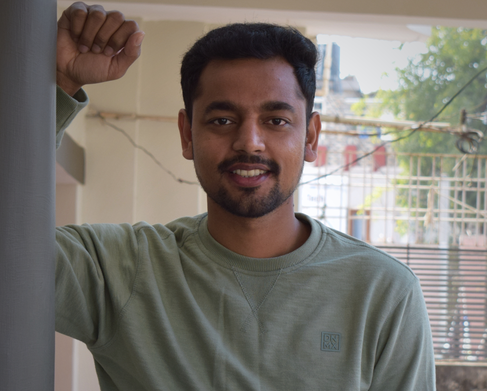

Hello World!

Hello, Thanks for visiting my webpage. Before you start checking, let me help you understand its basic layout, easy it's my resume with more details and an extra "About me" section. So let's start with the basics. I am a professional C++ Software Developer holding industry experience of 4+ years. I did my undergraduate from IIT Kanpur from the department of Electrical Engineering and a Minor in Computer Science. Currently, I am working in the domain of HFT (High-Frequency-Trading), developing robust, low latency C++ trading and market data platform for major Crypto Markets around the globe. As a hobbyist, I like tinkering with embedded systems, studying and programming several micro-controller chip-sets like esp32 & rp2040. I also like to explore & travel to different places, trekking or chilling on the beach. For more info on my open-source projects please feel free to visit my Github . And you can always find my latest resume here
Professional Experience
Core Engineering Software Developer II - Tower Research Capital
- Designed & Developed C++ latency sensitive Trading platforms for Crypto currencies markets, Including Market Data (with Arbitration) and Order Entry (Trade server) platforms
- Automated & Developed various tools like Crypto-Exchange-Replayer, Market Data Alert Manager, High speed RPC library over HTTP2, Stuck Order & Recovery Manager, etc. to improve trading the platform reliability & performance
- Skills achieved – C++14/17, Crypto Exchange Protocols, HTTP-2 Protocols, CMake, GDB, Jenkins/Git Actions
Senior Software Engineer - Samsung R&D Bangalore
- Designed & Developed various features of MAC protocol stack for LTE & eMTC 3GPP rel.12/13/14. Implemented & Optimized 4G-LTE S/W module like PUSCH & PUCCH resource allocation, VOLTE QoS & eMTC scheduling algorithms, 4G handover
- Automated the testing platform for MAC layer using Google-Test framework
- Skills achieved – C, C++, 3GPP LTE rel.12/13/14, Teraterm, G-Test framework
Unilever Leadership Internship Programme - HUL, India
- Efficiency Improvement of Hot Water Generator Plant by diagnosing 3 major factor affecting the same, namely Scaling effect, TDS and Logic fault in SCADA system
- Improved HWG efficiency from 24.5% to around 85%, which can help ensure profit of 1.3 million INR per year and automated the HGW efficiency tracking system to actively monitor the effeciency of hot water generator plant
Core Team Operation Member - IIT Kanpur, Counselling Service
- Designed an entirely new Counselling Service website with a fluid layout and ease of use. Developed a new software on database management for smooth and fast conduction of the interview process
- Planned and Implemented the complete Orientation Program of 853 freshmen of batch 2015. Coordinated with 44 students, 4 counsellors, 2 psychiatrists and numerous faculty members to provide academic, financial and emotional assistance to students in the campus
Ninja Stuff
Real Time IRIS recognition
January 2017Designed & Implemented Real-time IRIS recognition system using Discrete Cosine Transformation(DCT) and PCA for feature extraction and Machine Learning models for classification and achieved the accuracy of 98.7%
Market Data Server
November 2021Designed Low Latency, Asynchronous Market Data Server to capture market data from rest APIs (HTTP/Websockets) using Boost ASIO library. Added run-time configurability to capture data from multiple exchanges using a single binary
Quick Logger
March 2020Low Latency, multi-threaded C++ logging library, easy to integrate in any C++ code base. Library Synchronizes logs based on register time (when used in the multi threaded programs), user-friendly logging APIs, logging latency of around 400ns for 500 char
Securing Web Server (CyberSecurity)
August 2016Designed and executed Buffer Overrun Attacks, Code injection, Control Hijacking and return-to-libc attack to break security properties of server. Improvised server security by Privilege Separation, Server-Side Sand-boxing & Stack Canaries
Autonomous Self-driving Car Model
September 2016Designed Autonomous self-driving car model for dynamic & fuzzy traffic (simulating moving obstacle). The design include physical model of a 2-wheel drive car, along with PID controller. Used modified version of A* search algorithm to dynamically calculate best routes from current position to the destination
Line Following Robot
February 2016Designed a high speed line-following robot using IR sensor array and arduino uno (avr 16 bit) microcontroller. Implemented PID controller to minimize overshoot and stablizing time for achieving resposiveness during sharp turning corners
Real Time Classification from CCTV footage
Januray 2016Developed a Machine learning algorithm to classify vehicles and pedestrian from the CCTV footage. Integrated HoG descriptors to model a Linear SVM and Random Forest classifier with accuracy of 97.6%, and MOG subtraction tool for foreground detection
Qualifications
B.Tech (Hons) | Electrical Engg. | Minor CS (Algorithms)
Indian Institute of Technology, Kanpur
CBSE Sr. Secondary | class of XI, XII
Maharishi Vidya Mandir, Jabalpur
Skill Sets
Programming Languages
C, C++14, C++17, Python, PHP, HTML 5, CSS
CI/CD pipeline
Git actions, Jenkins
Development Tools
GDB Debugger, Git version control, Cmake & Premake Build system, Conda package management (CPM)
Concepts
Operating System (unix kernel), Computer Organization & Architecture, C++ Design Patterns, Computer Networks & Security, Data Struct & Algorthims